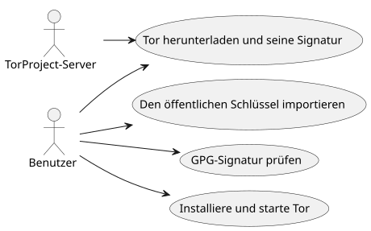
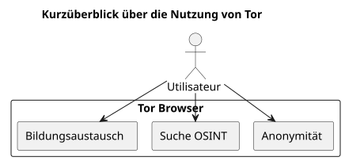

Tor Browser installieren und überprüfen unter Ubuntu
Publié le 05 October 2025
Einleitung
In einer Welt, in der die digitale Privatsphäre zunehmend bedroht ist, bleibt Tor Browser ein essentielles Werkzeug, um seine Anonymität und Informationsfreiheit zu bewahren. Doch es ist entscheidend, niemals heruntergeladene Software auszuführen, ohneseine Authentizität überprüft. Dieser Artikel stellt eine vollständige Methode für :
-
Tor Browser herunterladen und seine Signatur`.asc`
-
Überprüfen Sie die Gültigkeit der heruntergeladenen Datei
-
Installieren und starten Tor Browser unter Ubuntu
-
es hinzufügen zu den Desktop-Menüs für den täglichen Gebrauch
-
Bildungsressourcen und ethische OSINT-Quellen über Tor erkunden
Herunterladen von Tor und seiner Signatur
Erstellen Sie einen speziellen Ordner für den Tor-Browser :
mkdir -p ~/workspace/tipiak/tor
cd ~/workspace/tipiak/torLade anschließend das Archiv des Tor-Browsers und seine Signatur herunter:
wget https://www.torproject.org/dist/torbrowser/14.5.7/tor-browser-linux-x86_64-14.5.7.tar.xz
wget https://www.torproject.org/dist/torbrowser/14.5.7/tor-browser-linux-x86_64-14.5.7.tar.xz.ascKryptografische Verifizierung der Signatur
Dieser Schritt istunverzichtbarUm sicherzustellen, dass die heruntergeladene Datei tatsächlich vom Tor Project stammt und nicht verändert wurde.
1. Importieren Sie den öffentlichen Schlüssel des Tor-Projekts
gpg --auto-key-locate nodefault,wkd --locate-keys torbrowser@torproject.orgStellen Sie sicher, dass der Schlüssel ordnungsgemäß importiert ist:
gpg --list-keys torbrowser@torproject.org2. Signatur überprüfen
gpg --verify tor-browser-linux-x86_64-14.5.7.tar.xz.asc tor-browser-linux-x86_64-14.5.7.tar.xzWenn alles korrekt ist, wird die folgende Meldung angezeigt:
gpg: Good signature from "Tor Browser Developers (signing key)"Bei einer Warnung über einen nicht zertifizierten Schlüssel bedeutet dies einfach, dass Sie den vertrauenswürdigen Schlüssel des Tor-Projekts noch nicht unterschrieben haben, aber die Signatur bleibt gültig.
Praxisbeispiel: Gültige Signatur, aber Schlüssel nicht zertifiziert
Es ist häufig, während der Überprüfung eine Nachricht wie diese zu finden:
gpg --verify tor-browser-linux-x86_64-14.5.7.tar.xz.asc tor-browser-linux-x86_64-14.5.7.tar.xz
gpg: Signature faite le mar. 16 sept. 2025 14:26:26 CEST
gpg: avec la clef RSA CAAE408AEBE2288E96FC5D5E157432CF78A65729
gpg: Bonne signature de « Tor Browser Developers (signing key) <torbrowser@torproject.org> » [inconnu]
gpg: Attention : cette clef n'est pas certifiée avec une signature de confiance.
gpg: Rien n'indique que la signature appartient à son propriétaire.
Empreinte de clef principale : EF6E 286D DA85 EA2A 4BA7 DE68 4E2C 6E87 9329 8290
Empreinte de la sous-clef : CAAE 408A EBE2 288E 96FC 5D5E 1574 32CF 78A6 5729Diese Nachricht gibt an, dass die Signatur technisch „gut“ ist (die Datei wurde nicht verändert), aber Ihr GPG-System kann das Vertrauen in den Schlüssel selbst nicht zertifizieren. Um diesen Zweifel auszuräumen, ist es unerlässlich, den Fingerprint des Hauptschlüssels zu vergleichen (EF6E 286D DA85 EA2A 4BA7 DE68 4E2C 6E87 9329 8290) mit der auf der offiziellen Website des Tor-Projekts veröffentlichten
Laut der offiziellen Website, ist der erwartete Fingerabdruck :`EF6E286DDA85EA2A4BA7DE684E2C6E8793298290`.
Da der angezeigte Fußabdruck von`gpg`stimmt genau mit dem Schlüssel der offiziellen Website überein, können Sie sicher sein, dass der Schlüssel legitim ist und die Datei sicher ist. Die Warnung "nicht zertifizierter Schlüssel" ist dann eine Information über Ihre lokale GPG-Konfiguration und nicht über die Gültigkeit der Signatur oder die Echtheit der Datei.
Warum die Signatur überprüfen?
Die Überprüfung der GPG-Signaturen ist ein grundlegender Akt der digitalen Sicherheit. Sie ermöglicht :
-
garantierendie Authentizitätder heruntergeladenen Software
-
Verhindern Sie die Installation einer kompromittierten Datei durch einen böswilligen Akteur
-
An derdigitale Souveränitätindividuell
-
Fördern Sie eine verantwortungsvolle und ethische digitale Kultur

Entpacken und Starten von Tor Browser
Entpacken Sie das heruntergeladene Archiv:
tar -xvf tor-browser-linux-x86_64-14.5.7.tar.xz
cd tor-browserStarten Sie anschließend den Browser:
./start-tor-browser.desktopBeim ersten Start wird ein Konfigurationsfenster geöffnet, um die Verbindung zum Tor-Netzwerk herzustellen.
Integration auf dem Ubuntu-Desktop
Um Tor Browser im Anwendungsmenü hinzuzufügen :
./start-tor-browser.desktop --register-appDanach können Sie:
-
Starte Tor Browser vom Anwendungsmenü
-
Zum Dock-Favoriten hinzufügen
-
Eine Tastenkombination erstellen, falls gewünscht

Bildungsressourcen mit Tor erkunden
Tor ist nicht nur ein Werkzeug zur Anonymität. Es stellt ein Zugangstor zu Bildungs- und Forschungsressourcen dar, insbesondere in den Bereichen:
-
OSINT (Offene-Quellen-Intelligenz)
-
Bildungsaustausch und Open Source
-
https://archive.org(Zugriff über Tor für mehr Privatsphäre)
-
https://github.com/(zugänglich über Tor)
-
https://librarygenesis.pro(Zugang zu frei zugänglicher wissenschaftlicher Literatur)
-
Weitergabe von Wissen und Verständnis des Menschen in der digitalen Gesellschaft
-
Ressourcen zur digitalen Kultur, zur Meinungsfreiheit und zum Zugang zum Wissen
-
Freie Dokumentation zur Cybersicherheit und Ethik der Technologien
Update von Tor Browser
Um optimale Sicherheit zu gewährleisten, ist es entscheidend, den Tor Browser auf dem neuesten Stand zu halten. Der Browser verfügt über einen Mechanismus für automatische Updates, der über die Befehlszeile ausgelöst werden kann.
Aus dem Installationsverzeichnis des Tor Browsers reicht es aus, das Startskript einfach erneut auszuführen:
cd ~/workspace/tipiak/tor/tor-browser
./start-tor-browser.desktopBeim Start wird Tor Browser automatisch nach einer neuen Version suchen. Wenn eine solche existiert, wird sie heruntergeladen und für Sie installiert.
Diese einfache Methode stellt sicher, dass Sie stets über die neuesten Sicherheitsupdates und die aktuellsten Verbesserungen verfügen, was für ein sicheres Surfen unerlässlich ist.
Fazit
Das Überprüfen seiner Downloads ist ein wesentlicher Reflex für jede Person, die sich in einem sicheren digitalen Umfeld bewegen möchte. Tor auf verifizierte Weise zu installieren, istseine digitale Integrität schützen, Das Vertrauen in freie Software bewahren, et Seine Informationsautonomie stärken.
Digitale Sicherheit ist ein Akt des Gewissens, nicht der Paranoia.

Referenzen
-
Offizielle Website des Tor-Projekts:https://www.torproject.org/download/[https://www.torproject.org/download/]
-
Dokumentation der Signaturverifikation:https://support.torproject.org/tbb/how-to-verify-signature/[https://support.torproject.org/tbb/how-to-verify-signature/]
-
Ubuntu-Dokumentation :https://ubuntu.com[https://ubuntu.com]
-
Bildungsarchiv :https://archive.org/details/opensource[https://archive.org/details/opensource]
|
Dieser Artikel ist Teil der Reihe Sicherheit und digitales Bewusstsein, Mit dem Ziel, verantwortungsvolle und pädagogische Praktiken zu fördern Um die freien Werkzeuge. |